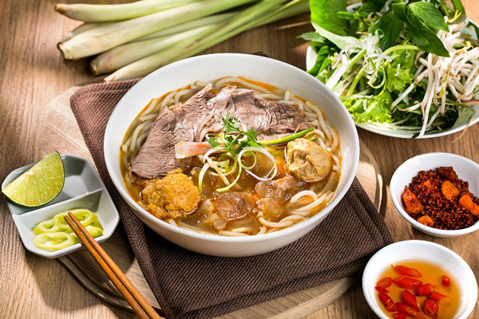

Bun Bo Hue

Description
Bún bò Huế is a spicy, aromatic Vietnamese noodle soup originating from the city of Huế. It features chewy rice vermicelli noodles in a robust, lemongrass-infused broth seasoned with shrimp paste, chili peppers, and beef.
Ingredients
- 1 lb beef shin or shank, cut into 1-inch chunks
- 1 lb Vietnamese rice vermicelli noodles
- 4 cups beef or chicken broth
- 1 tbsp shrimp paste
- 1 tsp brown sugar
- 2 green onions, sliced
- 3 cloves garlic, minced
- 2 cups bean sprouts
Steps
- In a large pot, combine the beef, pork, broth, lemongrass, garlic, shrimp paste, fish sauce, and brown sugar. Bring to a boil.
- Reduce heat and simmer for 1-2 hours, until the meats are very tender.
- Remove the lemongrass pieces. Use a slotted spoon to transfer the meat to a plate.
- Bring the broth back to a simmer. Add the rice noodles and cook for 3-5 minutes until tender.
- Divide the noodles and broth into serving bowls. Top with the cooked beef and pork.
- Garnish with the bean sprouts, cabbage, green onions, and sliced chilies.
- Serve with lime wedges on the side.